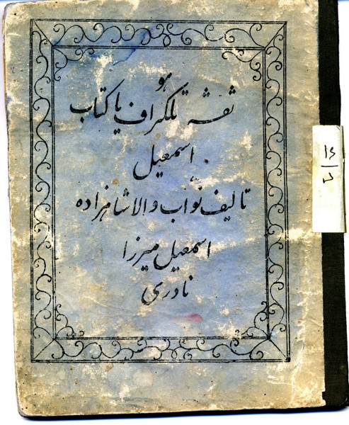
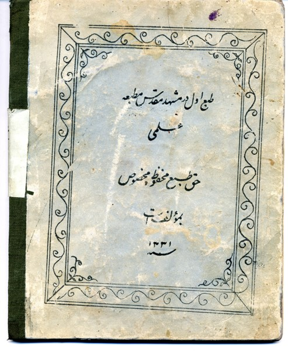
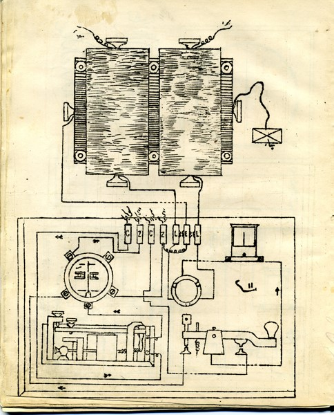
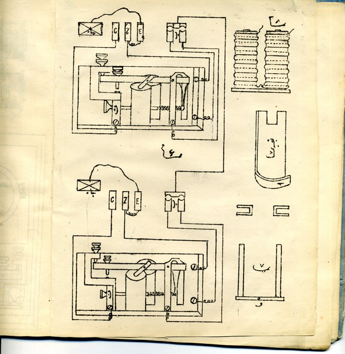
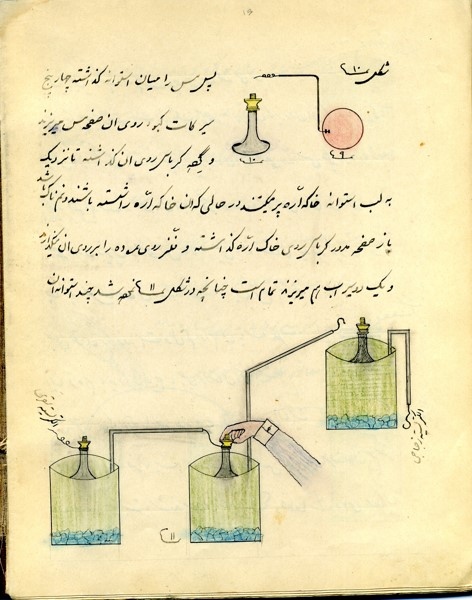
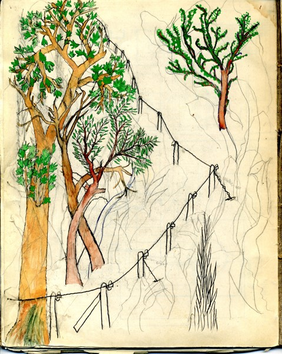
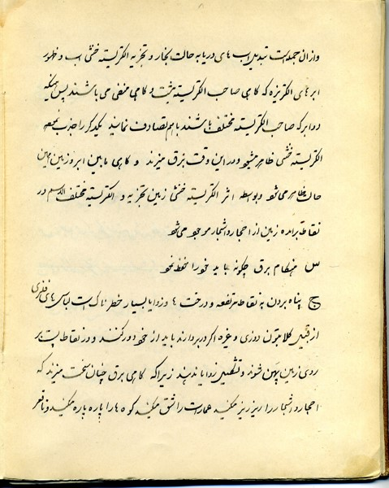
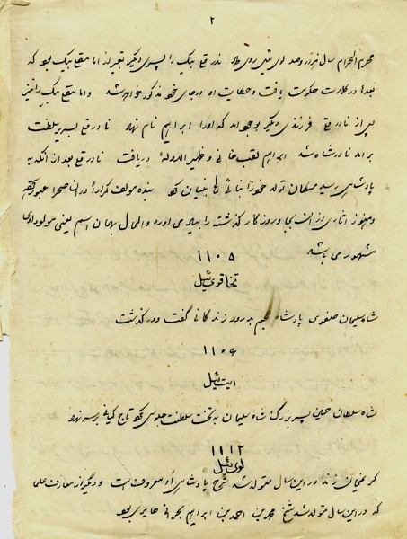
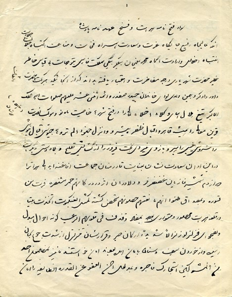

اسماعیل میرزا
چند نمونه از تالیفات اسماعیل میرزا
نقشه تلگراف، جزوه ای است آموزشی و مصور با 15 صقحه نمودار و اشکال مربوط به نحوه سیم کشی و نصب خطوط تلگراف و ابزار و تجهیزات مرتبط و 20 صفحه توصیحات. تاریخ چاپ 1331 قمری (1292 خورشیدی)

روی جلد

پشت جلد

صفحه اول

صفحه دوم

نمونه ای از تصاویر کتاب

نمونه ای از تصاویر کتاب
کتابی در 100 صفحه با تصویرهای رنگی با موضوع برق، مکانیک، دستگاه ها و تجهیزات مربوط به تلگراف و سیم کشی. جهت آموزش تهیه شده و در قسمت هایی به شکل سوال و جواب است.




نتیجه دوم- کتابی در 187 صفحه در باره احضار روح. ترجمه از یک کتاب فرانسوی است و نسخه برداری از اسماعیل میرزا.

صفحه اول

صفحه آخر
روزگار پادشاه کبیر نادر شاه افشار - جلد اول - 386 صفحه - پایان تالیف 1336 قمری (1296 خورشیدی)

صفحه اول

صفحه دوم

صفحه آخر
